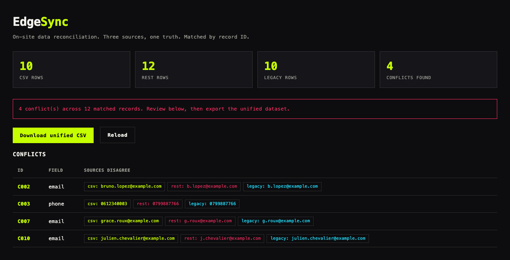

FILE / 01-EDGESYNC · reconciliation engine
EdgeSync
On-site data reconciliation engine
Walk into a customer site. Their data lives in three places that do not agree: a CSV export, a REST JSON endpoint, and a legacy fixed-width dump. EdgeSync ingests all three, reconciles by key, and surfaces every field-level conflict with proof. Resolve a conflict below and watch the open count drop, live.
"The data disagreed in three systems. We made it agree in one afternoon."Automotive recovery engagement
LIVE APP

EdgeSync reconciling 12 records across CSV, REST, and legacy sources.
CONFLICT CONSOLE · click RESOLVE to match
open conflicts: 4
C002a@x.comb@x.coma@x.com
C0030611..0612..0612..
C007ParisLyonParis
C011activeclosedactive
✓ ALL CONFLICTS RESOLVED · unified dataset emitted